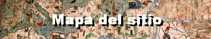

Amos del Universo

Tiene derecho a guardar silencio
Esoterismo
Bienvenidos a la página principal de ADU, Amos del Universo.
En el comienzo del Universo, se formaron dos imperios. Cuando los
imperios comenzaron la guerra, sus reyes fueron salvados y
envíados a un planeta en formación. El tercer planeta del sistema
solar, al que sus habitantes llaman Tierra.
Los reyes formaron un nuevo y gran imperio, pacífico, que no sólo
abarcaba la Tierra sino planetas aún desconocidos por los humanos.
Ellos son los Amos del Universo, que reinan sobre todo el espacio
conocido y desconocido aún.
"Si Dios quiere erradicar el mal del mundo y no puede, es impotente.
Si puede y no quiere es envidioso. Si no puede ni quiere, es envidioso
e impotente. Si puede y quiere, por qué no lo hace?" (Epicuro)
"Y el que sea inteligente, calcule el número de la bestia, pues es
un número de hombre, y su número es 666..." (Apocalipsis)
"Hágase la luz" (Dios)
"Pienso, luego existo" (René Descartes)
"E=MC2" (Albert Einstein)
"Eppure si muove" (Galileo Galilei)
"Tiene que haber algo mejor" (Yupi.com)
"Por lo menos asi lo veo yo" (Varios)
"Houston tenemos un problema" (Apollo XIII)
"Un pequeño paso para el hombre y un gran salto para la humanidad" (Neil Armstrong)
"Un pequeño paso para el hongo y un gran salto para la humedad" (Nenuco)
"Cuando muera voy a ser más famoso" (Rodrigo)
Preparado para resolución de 800x600 con 16 millones de colores en Internet Explorer 5.0.
Si tu explorador no soporta los frames o no los preferís, podés ir a "mapa.html" o hacer
click en Me perdí en el sitio para explorarla a mano.
Si querés hacer algún comentario sobre la página (preferiblemente constructivo) podés
enviarnos un email.
Una idea de Carolina Barenbaum y Pablo Barenbaum.